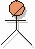

Artifacts >
Artifacts >
 Business Modeling Artifact Set >
Business Modeling Artifact Set >
 Business Use-Case Model... >
Business Use-Case Model... >
 Business Actor
Business Actor
Artifacts >
Business Modeling Artifact Set >
Business Use-Case Model... >
Business Actor
Artifact:
| ||||||||||||||||||||||||||||||||||||
|
 Business Actor |
A business actor represents a role played in relation to the business by someone or something in the business environment. |
| UML representation: | Actor, stereotyped as «business actor». |
| Role: | Business Designer |
| Optionality: | Can be excluded. |
| Sample Reports: | |
| More information: | |
| Input to Activities: | Output from Activities: |
The following people use the business actors:
|
Property Name |
Brief Description |
UML Representation |
| Name | The name of the business actor. | The attribute "Name" on model element. |
| Brief Description | A brief description of the business actor's sphere of responsibility and what the business actor needs the organization for. | Tagged value, of type "short text". |
| Characteristics | Used primarily for human business actors, who will act as customers or vendors to the organization: The physical environment of the business actor, the number of individuals the business actor represents, the business actor's level of domain knowledge, the business actor's level of computer experience, other applications the business actor is using, and other general characteristics such as gender, age, cultural background, etc. | Tagged value, of type "formatted text". |
| Relationships | The relationships, such as actor-generalizations, and communicates-associations, in which the actor participates. | Owned by an enclosing package, via the aggregation "owns". |
| Diagrams | Any diagrams local to the business actor, such as use-case diagrams depicting the business actor's communicates-associations with business use cases. | Owned by an enclosing package, via the aggregation "owns" |
Business actors are found and related to business use cases early in the inception phase, when the business engineering effort is scoped.
A business-process analyst is responsible for the integrity of business actors, ensuring that:
Decide which properties to use and how to use them. In particular you need to
decide at which level of detail the “Characteristics” property should be
described.
|
Rational Unified
Process
|